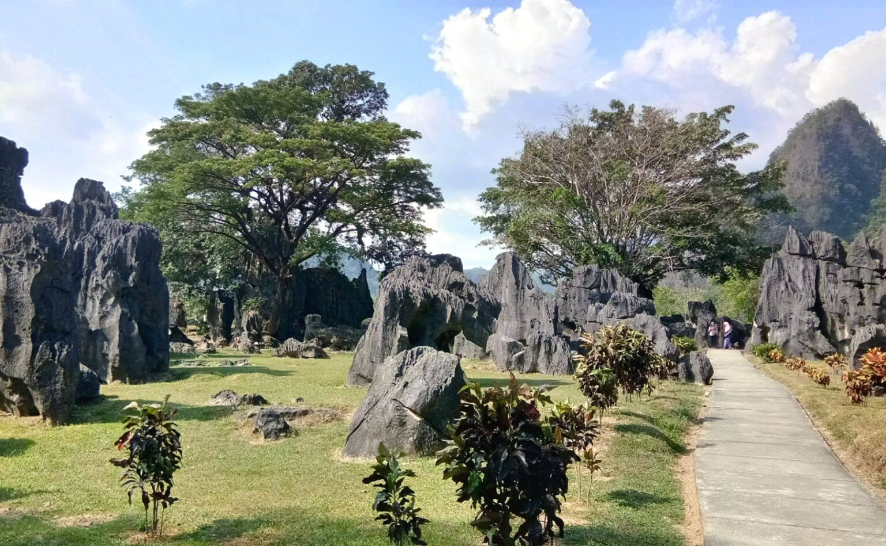

tempat populer
liat tempat yang paling populer



Tidak perlu menjelaskan tentang dirimu kepada siapapun, karena yang membencimu tidak percaya itu dan yang menyukaimu tidak butuh itu
Kau bisa menemukan hubungan sejati dengan orang lain hanya jika kau telah menemukan kedamaian dalam dirimu sendiri
Tidak semua bisa dimiliki,tapi semuanya bisa disyukuri. Enjoy every process
Peluang tidak muncul begitu saja, kamulah yang membuatnya
Aku Adalah Aku